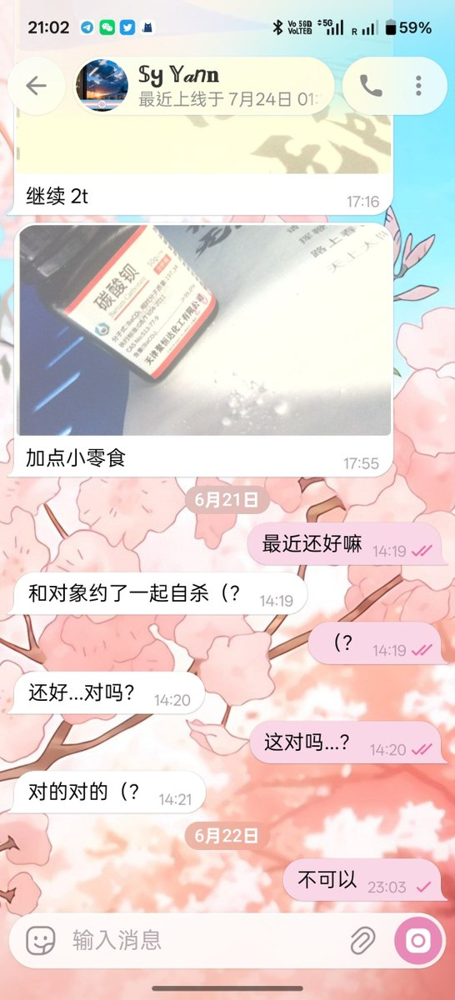

孙悟元
@wuyuandev
Sy的负面情绪不会害死Epheia，
但提前一个月就开始给对象准备盐，上一个这么做的人叫唐毓文。

龙雨绫🍥
@longyvling
够了……
你们真的是站在尊重逝者的角度来考虑的吗？
Epheia希望你们这样骂Sy，让Sy变得无比愧疚，许久难以忘怀？希望你把她搞得再次自杀？
Epheia之前求大家关心Sy的时候跑哪里去了？
怎么现在才跑过来？
不提Sy父母给Sy送进扭转，不提中国反跨至极的生活环境？
就提Sy的负面情绪把Epheia害死了？ https://t.co/RzOhL9Zimk